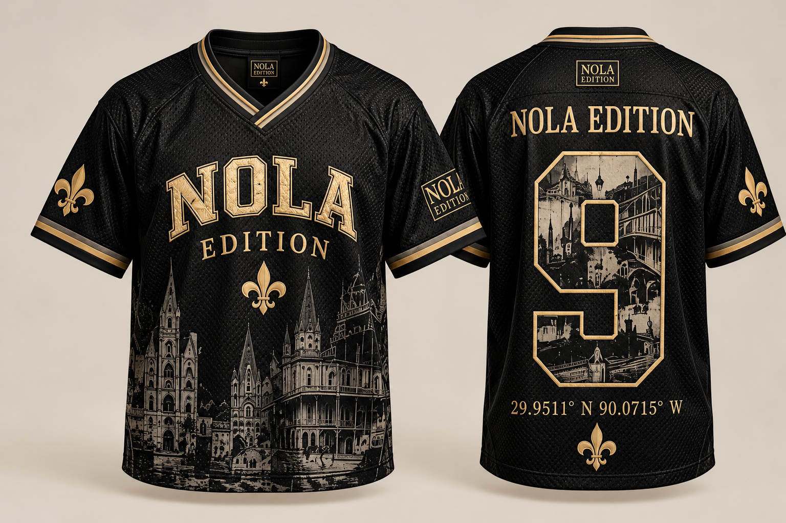

Archive 001 · Design 01

The Wearable Archive of New Orleans
Florida P
Archive 001 begins with place, memory and community. A limited reunion edition centered on Florida P and the 9th Ward.
Reunion
November 17, 2026
Not souvenir.
Archive.
NOLA EDITION is built around New Orleans as lived history. Each numbered edition is designed to hold onto a place, a memory and the people connected to it.
ARCHIVE 001
Florida
P
The first edition is dedicated to the Florida Project reunion and the 9th Ward community. The visual language is restrained: washed black, antique gold, architectural imagery and archival references.
A city of culture · A lifestyle of record
Made to remember where it came from.
Archive 001 uses apparel as a record of neighborhood identity. The story comes first. The garment carries it forward.
Florida Project Reunion
November 17.
The current site is centered on Archive 001 through reunion day.
Provenance.
The details establish the record. Every edition should be traceable back to the place and story that gave it meaning.
BrandNOLA EDITION
Archive001
Neighborhood9th Ward
EditionFlorida P